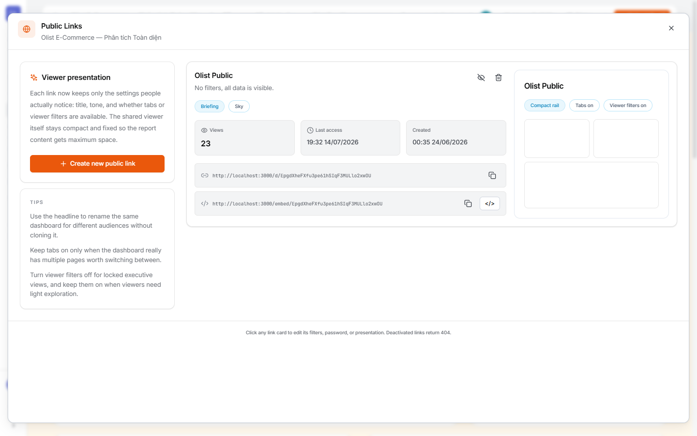
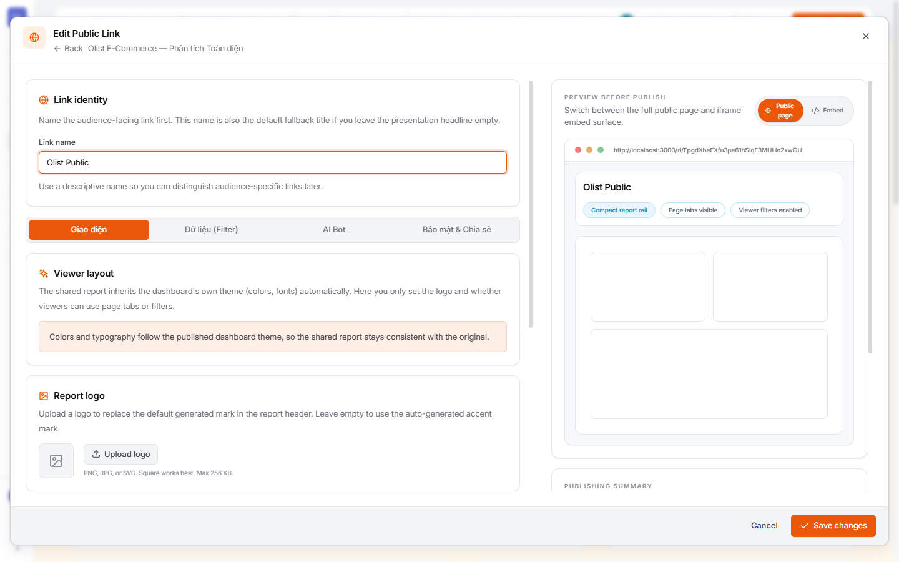
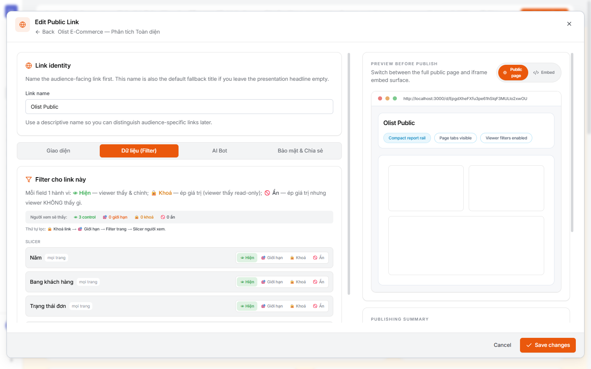
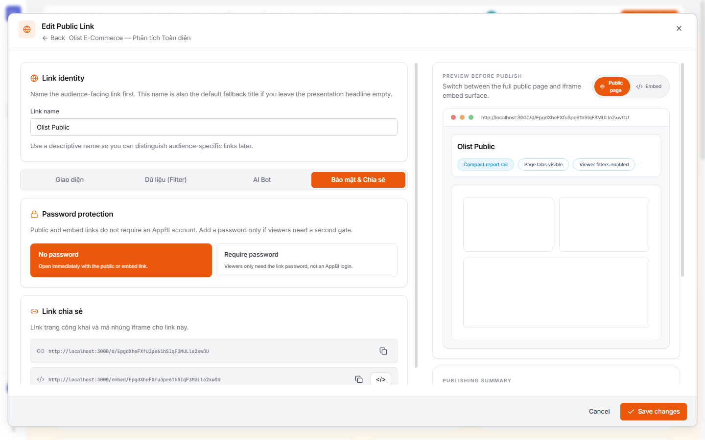

7.1Mở “Public Links” & các đường link
⚙ Cách mở
- Trong Dashboard, bấm ⋯ (Thêm tuỳ chọn) → Link công khai.
- Hộp Public Links liệt kê các link đã tạo (kèm lượt xem, lần truy cập cuối, ngày tạo).
- Mỗi link có 2 URL: trang công khai
/d/<token>và bản nhúng/embed/<token>— bấm để copy.

/d/… + /embed/…, và thẻ xem trước (Compact rail, Tabs, Viewer filters).Nhiều link cho nhiều đối tượng: bạn có thể tạo nhiều link từ cùng một báo cáo — mỗi link có tên, bộ lọc khoá, mật khẩu, giao diện riêng (ví dụ 1 link cho sếp đã khoá vùng, 1 link cho đối tác chỉ xem 1 bang).
7.2NORMAL — link cơ bản trong 30 giây
Mục tiêu: ai có link là xem được toàn báo cáo, không mật khẩu.
⚙ Cách làm
- Bấm Create new public link.
- Đặt Link name (để phân biệt sau này) — ví dụ “Olist Public”.
- Giữ nguyên mặc định: No password, filter Hiện hết, tabs/viewer-filters tuỳ báo cáo.
- Save changes → copy URL
/d/<token>và gửi đi.
Người xem thấy gì: đúng báo cáo bạn đang dựng (theo theme ở Chương 6), có thể chuyển trang & dùng slicer nếu bạn bật. Không cần đăng nhập AppBI.
7.3Giao diện link — logo, tabs, bộ lọc người xem
Là gì: mở một link → tab Giao diện. Link kế thừa theme của dashboard (màu/font); ở đây chỉ set thêm:
- Report logo — tải logo thay cho dấu mặc định (PNG/JPG/SVG, ≤256KB).
- Page tabs — cho người xem chuyển trang hay không.
- Viewer filters — cho người xem dùng slicer/bộ lọc hay khoá cứng.
- Compact rail — thanh điều hướng gọn cho khách.

Mẹo: bật tabs chỉ khi báo cáo thực sự nhiều trang đáng chuyển; tắt viewer filters cho báo cáo “điều hành đã khoá”, bật khi muốn người xem tự khám phá nhẹ.
7.4NÂNG CAO ① — khoá/giới hạn/ẩn dữ liệu (Filter)
Là gì: tab Dữ liệu (Filter) là phần quan trọng nhất của link nâng cao — quyết định người xem được thấy & lọc gì. Mỗi field có 4 hành vi:
- 👁 Hiện — người xem thấy & tự chỉnh (như slicer bình thường).
- 🎯 Giới hạn — chỉ cho chọn trong danh sách cho phép (allow-list).
- 🔒 Khoá — ép một giá trị, người xem thấy read-only (ví dụ khoá Bang = SP).
- 🚫 Ẩn — ép giá trị nhưng người xem không thấy field đó.

Ứng dụng thực tế: gửi cho đối tác ở Bang SP → Khoá (hoặc Ẩn) field Bang = SP: họ chỉ thấy dữ liệu của mình, không đổi được, không thấy bang khác. Đây là cách phân quyền dữ liệu cho người không có tài khoản.
7.5NÂNG CAO ② — mật khẩu & link nhúng
Là gì: tab Bảo mật & Chia sẻ:
- Password protection: No password (mở ngay) hoặc Require password — người xem chỉ cần mật khẩu của link (không phải tài khoản AppBI).
- Link chia sẻ: URL trang công khai
/d/<token>+ mã nhúng iframe/embed/<token>(nút </> để lấy code nhúng).

Nhúng (embed): dùng URL
/embed/<token> để cắm báo cáo vào website/portal nội bộ bằng <iframe>. Tab AI Bot (không trong ảnh) cho bật/tắt trợ lý AI hỏi-đáp ngay trên link công khai.7.6Normal vs Nâng cao — tóm tắt & Checklist
Bảng so sánh nhanh:
- NORMAL cần gì: tạo link → đặt tên → giữ No password, filter Hiện → copy URL
/d/…. Xong. - NÂNG CAO cần thêm: ① Filter — Khoá/Giới hạn/Ẩn field để phân quyền dữ liệu; ② Bảo mật — bật mật khẩu; ③ Giao diện — logo, tắt tabs/viewer-filters; ④ Nhúng — dùng
/embed/…; ⑤ AI Bot — bật trợ lý cho khách.
Checklist trước khi gửi: ✅ đặt tên link theo đối tượng; ✅ rà Filter (đúng field đã Khoá/Ẩn, không lộ dữ liệu ngoài phạm vi); ✅ quyết định mật khẩu; ✅ kiểm tabs/viewer-filters; ✅ mở thử Public page ở chế độ ẩn danh để xem đúng như khách sẽ thấy.
Bảo mật dữ liệu: link công khai bỏ qua đăng nhập — hãy luôn Khoá/Ẩn các field nhạy cảm và cân nhắc mật khẩu cho báo cáo nội bộ. Link bị vô hiệu hoá sẽ trả về 404.
🎉 Hoàn thành lộ trình A→Z! Bạn đã đi trọn phần lõi: Nguồn → Dataset & Model → Explore → Thư viện chart → Dashboard → Theme → Public link. Xem thêm Sản phẩm đầu cuối hoặc quay lại Mục lục hướng dẫn.
🔗 Liên quan